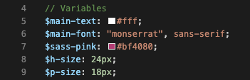
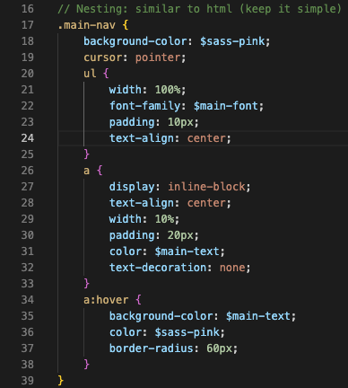
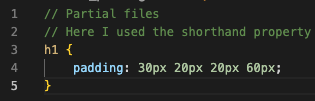
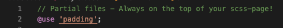
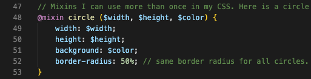
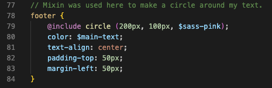
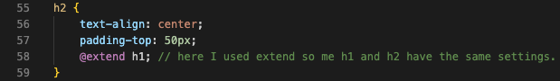

What is SASS?
Variables
Variables use the $ sign in front of the variable. This can make changes easier later on in your code because you just have to change it in one place and it automatically changes it for you in your css. 
Nesting
With this feature you can nest your css like you do in Html. Great way to see what goes together. 
Partials
You can make a partial file for some of your scss to try and keep your style sheet clean and simple. To connect your partial to your main scss use @use 'file name'  
Mixins
This is a really cool feature that lets you group together css that you want to reuse throughout your website. Make a @mixin with appropriate name. 
Here you can see how I used it with @include 
Extend/Inheritance
If you want to inherit or extend attributes from another class @extend is a great way to do that without having to write everything again. 